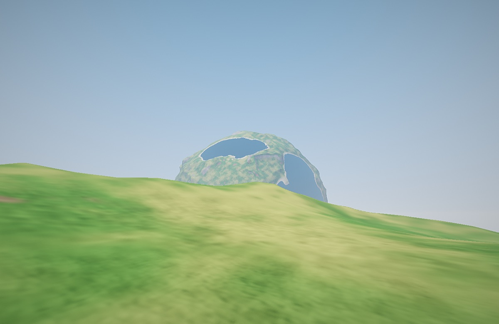
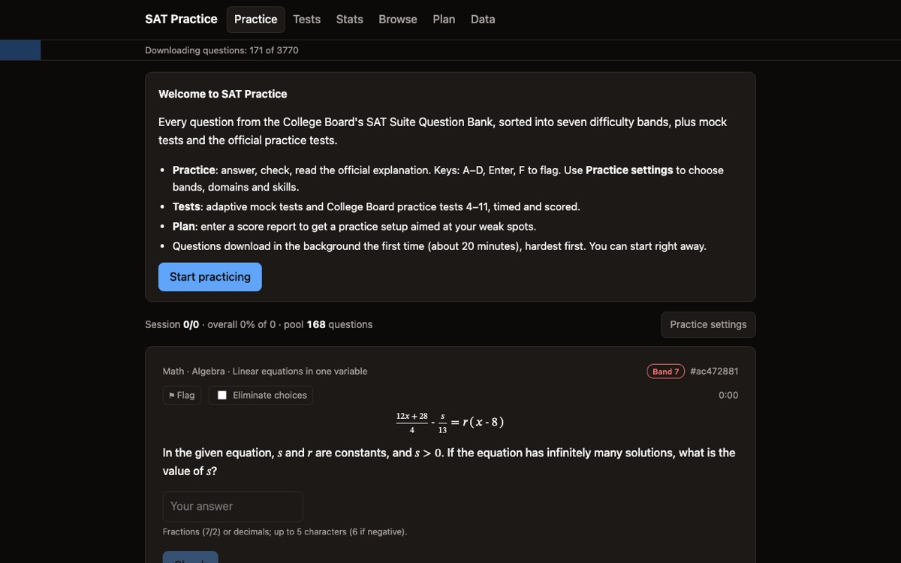

bengreff · things I have made

Glome
A walkable planet in four spatial dimensions. Exact physics, no words: boulders that swell and vanish as you turn, your own planet hanging in the sky, a knot that cannot hold, and a trail of artifacts that leads off the world.
play in the browser →
SAT Practice
Every College Board question-bank question in seven difficulty bands, adaptive mock tests, the official practice tests, and progress you can see.
open →